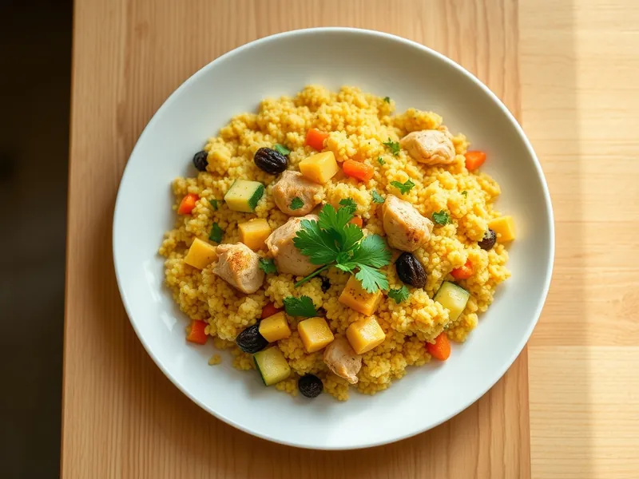

Кускус с курицей и овощами по-мароккански
Кускус с курицей, кабачком, морковью, изюмом и пряностями
25 мин3 порц.557 ккал на порциюБ 38 · Ж 13 · У 70Средиземноморская кухня
Открыть в приложении: порции, таймеры, список покупок
Продукты на 3 порц.
- Кускус1 стак.
- Куриное филе350 г
- Кабачок0,7 шт
- Морковь1 шт
- Лук репчатый1 шт
- Изюм2 ст. л.
- Оливковое масло2 ст. л.
- Зира1 ч. л.
- Куркума0,5 ч. л.
- Корица2 щеп.
- Вода1,5 стак.
- Соль1,5 ч. л.
- Кинза по желаниюпо вкусу
Как готовить
- Нарежьте филе кубиками 2 см, кабачок и морковь кубиками 1 см, лук мелко. Изюм промойте.
- Разогрейте масло на сильном огне и обжарьте курицу 4 минуты, пока кусочки не побелеют. Посолите, добавьте зиру, куркуму и корицу.
- Добавьте лук и морковь, жарьте на среднем огне 4 минуты, затем кабачок и изюм, ещё 4 минуты.
- Влейте 100 мл воды, накройте крышкой и тушите на слабом огне 5 минут, пока морковь не станет мягкой.
- Всыпьте кускус, влейте оставшиеся 200 мл кипятка, перемешайте, накройте и снимите с огня на 5 минут.
- Разрыхлите кускус вилкой и посыпьте кинзой.
Совет. Кускус не варят: его заливают кипятком и оставляют под крышкой. Если варить, он станет липким.